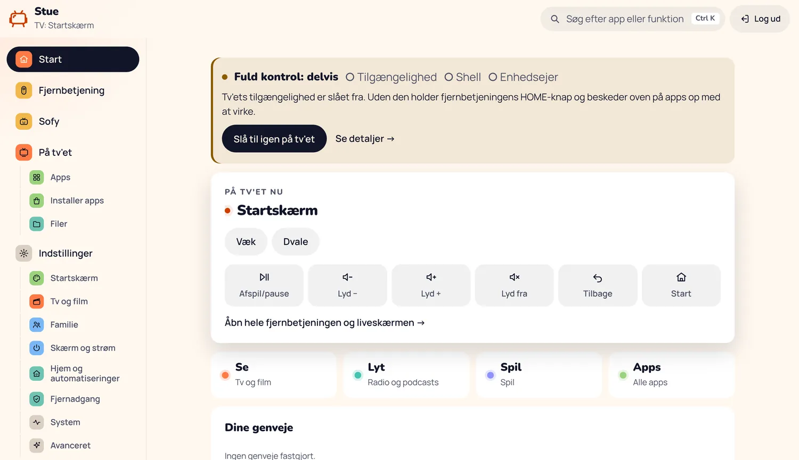
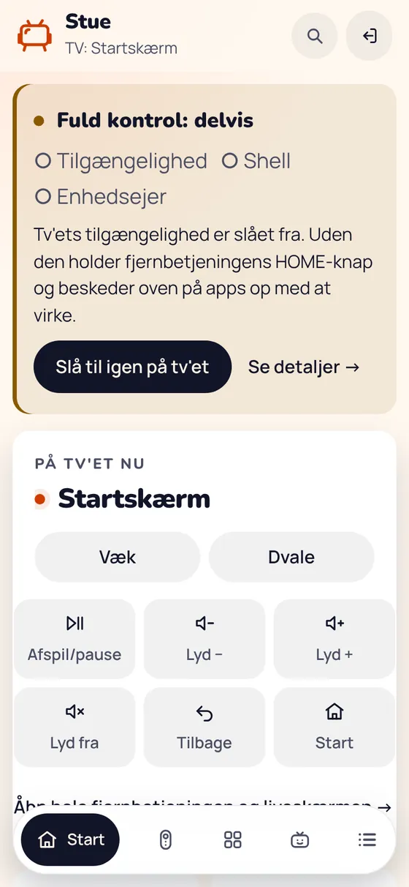

Hyggelig tid med dit tv. Alt på sin plads, som i en ryddelig stue.
Lavet til dem, der bare vil ligge i sofaen og se tv. Sofaly skifter startskærmen ud, ikke dit tv: Google er der stadig, der er ingen reklamer, og alt har ét fast sted.
Fem rækker, alt er synligt
Fortsæt, Se, Lyt, Spil og Apps. To klik til hvad som helst.
Ingen reklamer overhovedet
Heller ikke i det gratis abonnement, ikke én sponsoreret plads. Ingen sporing, der forlader dit hjem.
Hurtig på et simpelt tv
Målt på en 32-bit Chromecast: animationen tilpasser sig, hvad enheden kan klare.
Lavet til hele hjemmet
Også bedsteforældre
Stor tekst, en enkel tilstand, der siger appens navn, høj kontrast og skærmlæser. På 27 sprog.
Vågner med dig
Vækkeuret tænder selv tv'et, skruer langsomt op for lyden og åbner Godmorgen: klokken, vejret og kalenderen.
Holder øje med hjemmet
Lys, scener og dørklokke fra Home Assistant på tv'et. Går i dvale, når alle er gået.
Taler med din telefon
Styr den, skriv og send beskeder fra enhver telefon eller computer i hjemmet, beskyttet med PIN-kode.
Vejr, der passer
Det aktuelle vejr kommer fra den nærmeste lufthavn: målt, ikke gættet. En prognose for 9 dage med ét OK.
Passer på sig selv
En låst backup hver nat, vedligeholdelse, mens du sover, og en diagnose, der forklarer, hvad der gik galt.
Dit tv også på din telefon og computer.
Åbn browseren på samme netværk, skriv PIN-koden, og så er du inde: fjernbetjening, skrivning med accenter, tv-skærmen live, beskeder og indstillinger. Intet at installere og ingen konto.


- Panel på din telefon og computerFjernbetjening, skrivning med accenter, live visning af tv-skærmen, billeder til pauseskærmen, tavlen og backups, fra browseren på enhver enhed i hjemmet.
- Spørg tv'etSkriv eller sig „åbn YouTube“, „påmind mig om 7 minutter“, „sluk om 30 minutter“, og tv'et gør det.
- Del fra din telefonInstalleret som app dukker panelet op under Del: en YouTube-video åbner på tv'et, et link åbner på tv'et, og en tekst bliver til en besked.
- Genvej på WindowsTv'et vises under Netværk i Stifinder med en genvej, der åbner panelet, også hvis dets IP ændres.
- Tv'et som netværksdrevKopiér filer til tv'et ved at trække dem: på Windows vises det under Denne pc som en telefon; på Mac, Linux og telefoner via sikker WebDAV.
- Flere hjemPas på tv'et hjemme hos dig og hos dine forældre fra samme telefon.
Rigtige skærme fra panelet med eksempeldata.
120 nye ting, dit tv kan. Ordnet i 12 verdener, på samme måde som rækkerne ordner skærmen.
- StartskærmenEn overskuelig skærm, som alle forstår, indrettet, som du vil have den.19
- SeDine film, dine serier og en afspiller som i en hjemmebiograf.14
- LytRadio og podcasts med samme omhu som video.5
- SpilAlle dine spil ét sted, klar til controlleren.6
- AppsDine apps i en rækkefølge, der giver mening.3
- HjemmetVækkeur, timere, automatiseringer og det smarte hjem.13
- Vejr og pauseskærmDet rigtige vejr og en pauseskærm, der er værd at lade stå.13
- FamilieEn profil til alle, omsorg for børnene og en varm velkomst til gæster.12
- Telefon og computerTv'et taler med enhederne i hjemmet.11
- Passer på sig selvBackup, vedligeholdelse og diagnose, uden at du skal huske det.13
- For alleLavet til folk, der ser, hører eller bruger fjernbetjeningen på forskellige måder.5
- PrivatlivIngen reklamer, ingen sporing og en PIN-kode, hvor det betyder noget.6
Startskærmen
En overskuelig skærm, som alle forstår, indrettet, som du vil have den.

Rækkerne
Fortsæt, Se, Lyt, Spil og Apps, hver i sin egen række, den ene under den anden. Alt er synligt, med stor tekst.
Fortsæt
Ét sted at vende tilbage til det, du var i gang med: afsnittet, stationen, podcasten eller den sidste app.
Topbjælke
Søgning, stemme, vejret på én linje og klokken, altid samme sted. Den foldes sammen, mens du bladrer, så skærmen kan ånde.
Rækkerne
Fortsæt, Se, Lyt, Spil og Apps, hver i sin egen række, den ene under den anden. Alt er synligt, med stor tekst.
Hvor: Det er startskærmen: den kommer frem, når du trykker på HOME.Fortsæt
Ét sted at vende tilbage til det, du var i gang med: afsnittet, stationen, podcasten eller den sidste app.
Hvor: En række på startskærmen.Topbjælke
Søgning, stemme, vejret på én linje og klokken, altid samme sted. Den foldes sammen, mens du bladrer, så skærmen kan ånde.
Hvor: Gå op til den med ▲.Google virker fortsat
Google Assistent, Gemini, søgning og din Google-konto virker som før. Sofaly ændrer startskærmen, ikke dit tv.
Hvor: Brug mikrofonknappen som altid.Hurtigpanel
Wi-Fi, Bluetooth, sovetimer, lydudgang, vækkeur, profiler, notifikationer og indkøbslisten, fra enhver app.
Hvor: Hold TILBAGE nede.Din fjernbetjening, dine regler
HOME vender altid tilbage til Sofaly. Hold TILBAGE nede for at åbne hurtigpanelet, hold HOME nede for at åbne Hjemmet, og hold OK nede på en app for at åbne dens menu.
Hvor: En tastetester viser hver knap, tv'et modtager.Spiller nu
En pille øverst med omslag og titel på det, der spiller. OK sætter på pause eller fortsætter, hold OK nede for at åbne appen.
Hvor: Slå det til under Startskærm › Flere muligheder.Temaer og baggrunde
Mørkt, med kunsten fra det, der er i fokus. Galleri, med et maleri fra The Met hver dag. Himmel, med satellit og kort. Eller din egen baggrund, billede eller video. Baggrunde fra plugins virker også, som luftoptagelserne fra Overflight.
Hvor: Mørkt, Galleri og Himmel i Basic; de andre i Pro.Ikoner, du kan lidePro
Brug en ikonpakke fra Play, eller skift en enkelt apps ikon, én ad gangen.
Hvor: Hold OK nede på appen › Skift ikon.Animationer, der passer til dit tv
Kraftige tv'er animerer alt; enklere animerer kun det, du har valgt, og sætter selv farten ned, når billeder tabes.
Hvor: Indstillinger › Udseende.MånefasePro
Aftenens måne, og hvor meget af den der er oplyst, beregnet på selve tv'et uden internet.
Hvor: I vejrudsigten, på pauseskærmen og på vejrikonet om natten. Indstillinger › Udseende.NedtællingPro
Hvor mange dage der er tilbage til den dato, du vælger, eller til den næste helligdag.
Hvor: I pillen øverst på skærmen. Indstillinger › Udseende.Påmindelse for hjemmetPro
En note, der kommer igen på de ugedage, du vælger: genbrugsdag, medicin, en undervisningstime.
Hvor: I pillen øverst på skærmen. Indstillinger › Udseende.Din tjenestes statusPro
Tv'et tjekker en adresse, du giver det, og viser, om den kører: hjemmeserveren, butikkens hjemmeside.
Hvor: I pillen øverst på skærmen. Indstillinger › Udseende.Dagens kurserPro
Valutaer, bitcoin og ether til dagens værdi, fra åbne officielle kilder.
Hvor: Ved siden af vejret i topbjælken. Indstillinger › Udseende.Dit holds næste kampPro
Hvornår og mod hvem dit hold spiller næste gang, på et kort på startskærmen.
Hvor: På startskærmen. Indstillinger › Udseende.Kort fra andre appsPro
Ud over Sofalys egne kort sætter partnerapps deres på startskærmen: madleveringen, bussen, beskeden fra ejendommen.
Hvor: Kortene vises sidst i Se.Øen øverst på skærmen
Beskeder skiftes i en pille øverst: intet internet, påmindelse, kalender og vækkeur. Det vigtige vokser i 5 sekunder med „▲ for at åbne“, Hjemmets dørklokke dukker op med det samme, og når du tænder tv'et, kommer der en opsummering af, hvad der er sket.
Hvor: Startskærmen, øverst.Det rigtige forslag på det rigtige tidspunkt
Uden kunstig intelligens: ud fra ugens brug foreslår tv'et det, der giver mening på det tidspunkt.
Hvor: Startskærm.
Se
Dine film, dine serier og en afspiller som i en hjemmebiograf.
Fra computeren
Videoer, musik og billeder fra Plex, Jellyfin, Emby, mapper på pc eller NAS (SMB, WebDAV, FTP, SFTP, NFS), OneDrive, Dropbox, Box, Google Drev, UPnP og USB-drev.
En afspiller, der afspiller alt
Dolby- (AC3, E-AC3), DTS- og TrueHD-lyd samt undertekster fra Blu-ray, dvd og anime, uden at installere Kodi eller VLC.
Fortsætter, hvor du slap
Film og afsnit starter det rigtige sted. Næste afsnit starter efter 10 sekunder, og efter 3 i træk spørger tv'et, om du stadig ser med.
Fra computeren
Videoer, musik og billeder fra Plex, Jellyfin, Emby, mapper på pc eller NAS (SMB, WebDAV, FTP, SFTP, NFS), OneDrive, Dropbox, Box, Google Drev, UPnP og USB-drev.
Hvor: Servere, der er tændt, og USB-drev dukker selv op; resten tilføjes under Tilføj.En afspiller, der afspiller alt
Dolby- (AC3, E-AC3), DTS- og TrueHD-lyd samt undertekster fra Blu-ray, dvd og anime, uden at installere Kodi eller VLC.
Hvor: Tryk på ▼ under en video for lyd, undertekster og undertekststørrelse.Fortsætter, hvor du slap
Film og afsnit starter det rigtige sted. Næste afsnit starter efter 10 sekunder, og efter 3 i træk spørger tv'et, om du stadig ser med.
Hvor: Virker af sig selv.Spring intro over
Når en series intro er kendt, vises „Spring intro over · OK“. Du kan også markere introen én gang, så husker tv'et den.
Hvor: Slået til fra start.Foretrukken lyd og undertekster
Original med undertekster eller eftersynkroniseret, valgt én gang og husket for hver titel. Undertekster fra internettet, når filen ikke har nogen.
Hvor: Tv og film › Lyd og undertekster.Film uden hakken
Tv'et skifter til 24 Hz, mens en film spiller, så kamerapanoreringer forbliver jævne.
Hvor: Slår til med filmen; skærmen blinker sort i et sekund.Se og hør bedre
Undertekster på sort baggrund eller i gult, „Tydeligere stemme“, der fremhæver tale, og „Jævn lydstyrke“, der tæmmer høje film og løfter stille.
Hvor: I afspillerens ▼-menu.Automatiske underteksterUltra
Når der ikke er undertekster på dit sprog, oversætter tv'et dem, der findes.
Hvor: Vælg det i afspillerens menu for undertekster.Komplette filmsiderUltra
Plakat, bedømmelse, medvirkende, trailer, aldersgrænse og filmens samling på en flot side med stor tekst. Med „Hvem er den skuespiller?“: billede, rolle og andre værker.
Hvor: OK på en film eller serie.Dine lister fra Trakt og SimklPro
Det, du vil se, og det, du har set, synkroniseret med din konto og dine andre enheder.
Hvor: Log ind med QR-koden under Tv og film › Tjenester.Én søgning til alt
Finder film, serier, stationer og apps på én gang og tager den samme søgning med til YouTube, Netflix eller Prime Video.
Hvor: I topbjælken eller med stemmen.To undertekster på én gang
For eksempel dit sprog nederst og originalen øverst, for at lære eller se sammen.
Hvor: Afspillerens ▼-menu › Undertekster.Højere dialog
Når 5.1-lyd bliver til stereo, forbliver tale forrest, og eksplosioner overdøver ikke stemmerne.
Hvor: Afspillerens ▼-menu.Ingen spoilere og et andet sprog
Resuméet af et afsnit, du ikke har set, forbliver skjult. Ingen lyd eller undertekster på dit sprog? Så kommer det andet sprog, du har valgt.
Hvor: Tv og film › Lyd og undertekster.
Lyt
Radio og podcasts med samme omhu som video.

Radio fra hele verden
Tusindvis af åbne radiokanaler, efter navn, land eller genre, med dine favoritter og de seneste, du har lyttet til.
Podcasts
Abonnér efter navn, lyt på tv'et, og fortsæt afsnittet, hvor du slap.
Opdag podcasts
Søg i hele det åbne podcastkatalog, og se, hvad der er populært i dit land.
Radio fra hele verden
Tusindvis af åbne radiokanaler, efter navn, land eller genre, med dine favoritter og de seneste, du har lyttet til.
Hvor: Lyt › Radio.Podcasts
Abonnér efter navn, lyt på tv'et, og fortsæt afsnittet, hvor du slap.
Hvor: Lyt › Podcasts.Opdag podcastsPro
Søg i hele det åbne podcastkatalog, og se, hvad der er populært i dit land.
Hvor: Lyt › Podcasts › Søg.Afspiller i fuld skærm
Stort omslag, kapitler, hastighed og en sovetimer, der stopper ved slutningen af afsnittet.
Hvor: Lyt › Spiller nu › Åbn afspilleren.Lyd i dine hovedtelefonerPro
Filmens lyd går til hovedtelefonerne på din telefon, synkront, så du kan se om aftenen uden at vække nogen.
Hvor: Afspillerens ▼-menu › Lyd på telefonen.
Spil
Alle dine spil ét sted, klar til controlleren.

Alle dine spil ét sted
GeForce NOW, Steam Link, Moonlight, PS Remote Play, RetroArch og tv'ets spil forlader apprækken og bor i Spil, grupperet i Cloud, Fra pc'en, Retro og På tv'et.
Spil på pc'en ovenpå
Tv'et vækker computeren over netværket, venter på svar og åbner Moonlight eller Steam Link. At vække pc'en over netværket virker også uden for Spil, fra en genvej på startskærmen.
Test netværket
Fortæller, om dit internet kan klare cloudgaming, og advarer, før et cloudspil åbnes på et svagt netværk.
Alle dine spil ét sted
GeForce NOW, Steam Link, Moonlight, PS Remote Play, RetroArch og tv'ets spil forlader apprækken og bor i Spil, grupperet i Cloud, Fra pc'en, Retro og På tv'et.
Hvor: Hold OK nede på et spil for at skifte dets gruppe.Spil på pc'en ovenpå
Tv'et vækker computeren over netværket, venter på svar og åbner Moonlight eller Steam Link. At vække pc'en over netværket virker også uden for Spil, fra en genvej på startskærmen.
Hvor: Gem computeren én gang i webpanelet.Test netværket
Fortæller, om dit internet kan klare cloudgaming, og advarer, før et cloudspil åbnes på et svagt netværk.
Hvor: Spil › Test netværket.Spilcontrollere
Par en controller uden at lede i menuer, se de forbundne øverst, og lad, hvis du vil, en forbundet controller åbne Spil.
Hvor: Spil › Par controller.Spiltilstand
Mens et spil er åbent, venter pauseskærmen, natfilteret og beskederne på, at kampen slutter.
Hvor: Slår sig selv til.Din Discord-bande
Se, hvem fra din Discord-server der er online og i hvilket spil, og kald på banden direkte fra tv'et.
Hvor: Slå serverens widget til, og indsæt dens nummer.
Apps
Dine apps i en rækkefølge, der giver mening.
Dine favoritter forrest
Apps viser de 8 apps, du åbner mest, og „Alle apps“ viser resten i et gitter.
På din måde
Flyt, stabl eller skjul enhver app. Fabriksapps, du ikke bruger, træder til side.
Frie Netflix- og YouTube-knapper
Fjernbetjeningens appknapper åbner den app, du vil. Tryk for at åbne, hold i 3 sekunder for at skifte den.
Dine favoritter forrest
Apps viser de 8 apps, du åbner mest, og „Alle apps“ viser resten i et gitter.
Hvor: I rækken Apps.På din måde
Flyt, stabl eller skjul enhver app. Fabriksapps, du ikke bruger, træder til side.
Hvor: Hold OK nede på en app.Frie Netflix- og YouTube-knapper
Fjernbetjeningens appknapper åbner den app, du vil. Tryk for at åbne, hold i 3 sekunder for at skifte den.
Hvor: Virker med den originale fjernbetjening.
Hjemmet
Vækkeur, timere, automatiseringer og det smarte hjem.

Vækkeur, der tænder tv'et
Til tiden tænder tv'et sig selv, lyden skrues langsomt op, og der er snooze. Hvert vækkeur har navn, dage, lyd og lydstyrke, endda en app eller den sidste station.
Timere og timeglas
Op til 3 navngivne timere med besked på skærmen, og et stopur.
Blid slukning
Sovetimeren dæmper skærmen og skruer ned for lyden de sidste 5 minutter, så ingen vågner, når den slukker.
Vækkeur, der tænder tv'et
Til tiden tænder tv'et sig selv, lyden skrues langsomt op, og der er snooze. Hvert vækkeur har navn, dage, lyd og lydstyrke, endda en app eller den sidste station.
Hvor: Hold TILBAGE nede › Vækkeur.Timere og timeglas
Op til 3 navngivne timere med besked på skærmen, og et stopur.
Hvor: „Ok Google, åbn Påmind mig om 10 minutter“.Blid slukning
Sovetimeren dæmper skærmen og skruer ned for lyden de sidste 5 minutter, så ingen vågner, når den slukker.
Hvor: Timerfeltet i hurtigpanelet.Slukker, hvis ingen ser med
Efter den tid, du vælger, uden tastetryk spørger tv'et med stor tekst, om du stadig ser med, og går så i dvale.
Hvor: Skærm og strøm › Sluk ved inaktivitet.Færdige opskrifter
Søvn, Sæbeopera og Kamp indstiller tv'et på én gang (lyd, skærm og beskeder). Ét OK anvender, et andet fortryder.
Hvor: Hurtigpanel.AutomatiseringerPro
På et bestemt tidspunkt, når der trykkes på en knap, eller når noget sker (filmen blev sat på pause, alle er gået, der kommer regn): tv'et åbner en app, kører en scene eller slukker.
Hvor: Hjem og automatiseringer › Automatiseringer.Home Assistant på tv'etPro
Lys, stik, ventilatorer, gardiner, aircondition og scener direkte fra sofaen. Den taler med din server på dit netværk, uden nogen sky imellem.
Hvor: Hold HOME nede.Hvem står ved dørenPro
Når det ringer på døren, dukker kameraets billede op oven på det, du ser.
Hvor: Med Home Assistant.Går i dvale, når alle går
Med en UniFi-router bemærker tv'et, at husstandens telefoner er gået, og går i dvale.
Hvor: Skærm og strøm › Flere muligheder.Stemmegenveje
„Ok Google, åbn Vejrrapport“ læser vejrudsigten højt. Film, Mit hjem, Tavle, timere og slukning åbner på samme måde.
Hvor: Brug mikrofonknappen.Tænder sammen med tv'et
Tændte du tv'et med dets egen fjernbetjening? Enheden vågner også, uden sort skærm. Og LG-lydstyrken over netværket; når enheden går i dvale af sig selv, slukker LG'en også.
Hvor: Slår sig selv til.Forstyr ikke
I de timer, du vælger, venter beskeder og lyde.
Hvor: Hjem og automatiseringer.„Kun hvis“ og helligdage
Automatiseringer, der kun kører på hverdage, når nogen er hjemme, eller når det regner, og som kender dit lands helligdage.
Hvor: Hjem og automatiseringer › Automatiseringer.
Vejr og pauseskærm
Det rigtige vejr og en pauseskærm, der er værd at lade stå.
Dagens vejr, målt
Temperaturen kommer fra rapporten fra den nærmeste lufthavn, og dag/nat-ikonet følger solopgang og solnedgang, hvor tv'et står.
Regn fra tre modeller
Regnchancen er medianen af tre vejrmodeller (ECMWF, ICON og GFS), som rammer forkert sjældnere end hver af dem alene.
Vejrudsigt i fuld skærm
De næste 24 timer, et regndiagram, 9 dage, luftkvalitet, solen og månen.
Dagens vejr, målt
Temperaturen kommer fra rapporten fra den nærmeste lufthavn, og dag/nat-ikonet følger solopgang og solnedgang, hvor tv'et står.
Hvor: Øverst på startskærmen.Regn fra tre modellerUltra
Regnchancen er medianen af tre vejrmodeller (ECMWF, ICON og GFS), som rammer forkert sjældnere end hver af dem alene.
Hvor: Vises af sig selv i vejrudsigten.Vejrudsigt i fuld skærm
De næste 24 timer, et regndiagram, 9 dage, luftkvalitet, solen og månen.
Hvor: OK på vejret.Regnvarsel
En besked oven på din app, når det snart begynder at regne. Tid til at tage vasketøjet ind.
Hvor: Startskærm › Vejr.En pauseskærm, der er værd at lade stå
Hilsen, et stort ur, datoen, vejret og kort med notifikationer, næste vækkeur og beskeder. I temaet Galleri glider dagens maleri langsomt, så intet brænder fast.
Hvor: Skærm og strøm › Pauseskærm.Dine billeder på pauseskærmen
Send billeder fra din telefon, eller vælg en netværksmappe. De ligger i en mappe, som kun tv'et kan se.
Hvor: En QR-kode åbner panelet på den rigtige side.Godmorgen
Når du slukker vækkeuret: hilsen, klokken, vejrudsigten og dagens kalender, og tv'et kan læse det højt.
Hvor: „Ok Google, åbn Godmorgen“.Google Kalender
Dagens begivenheder og fødselsdage på tv'et, fra én konto eller alle samlet.
Hvor: OK på datoen øverst.Natfilter
Om aftenen bliver skærmen varmere og blidere for øjnene.
Hvor: Skærm og strøm › Flere muligheder.Ugeoversigt
Søndag aften et kort med skærmtid pr. app, brugt internet og netværksudfald.
Hvor: Skærm og strøm › Flere muligheder.Varsel om stærk varme eller kulde
Det samme varsel som ved regn, oven på enhver skærm, når der kommer stærk varme eller kulde.
Hvor: Startskærm › Vejr.Nattehimlen
Rumstationen, meteorsværme, supermåner og formørkelser. Den giver kun besked, når du kan se dem hjemmefra, med klar himmel.
Hvor: Pauseskærm.Dit tvs år
I december et tilbageblik på året: det, der mest blev set, lyttet til og spillet på dit tv. Det bliver på tv'et.
Hvor: Vises i december.
Familie
En profil til alle, omsorg for børnene og en varm velkomst til gæster.

En profil til alle
Hver Google-konto på tv'et har sine egne favoritter, ting at fortsætte og rækkefølge af apps.
Børneprofil
Markér en profil som et barns: børnetilstand og sengetid slår sig selv til, og at gå ud beder om forældrenes PIN-kode.
Sengetid
I det tidsrum, du vælger, åbner kun tilladte apps, og lydstyrken har et loft.
En profil til alle
Hver Google-konto på tv'et har sine egne favoritter, ting at fortsætte og rækkefølge af apps.
Hvor: Hold TILBAGE nede › Profiler.Børneprofil
Markér en profil som et barns: børnetilstand og sengetid slår sig selv til, og at gå ud beder om forældrenes PIN-kode.
Hvor: Hurtigpanel › Profiler.Sengetid
I det tidsrum, du vælger, åbner kun tilladte apps, og lydstyrken har et loft.
Hvor: Familie › Flere muligheder.Daglig skærmtid
En daglig tv-grænse for dem, du vælger.
Hvor: Familie › Flere muligheder.Gæstetilstand
Skjuler din profil, din kalender og de apps, du vælger, mens du har besøg.
Hvor: Feltet Gæster i hurtigpanelet.Wi-Fi til gæster
Skriv adgangskoden én gang; gæster scanner en QR-kode på tv'et og er på.
Hvor: Familie › Wi-Fi til gæster.Familietavle
Indkøbsliste, fastgjorte noter og dagens fødselsdage, i hurtigpanelet og på pauseskærmen.
Hvor: Redigér fra telefonen; OK krydser et punkt af.Beskeder på afstandPro
Familie, der bor langt væk, sender beskeder og billeder til tv'et derhjemme, hvorfra som helst.
Hvor: Invitér via link.VideobeskederPro
En kort video fra familien vises på tv'et med afsenderens navn.
Hvor: Fra panelet på telefonen.Aldersgrænser
I børnetilstand film og serier efter den rigtige alder, ud over kategorierne.
Hvor: Familie.Værtstilstand
Til udlejning: gæsten bruger tv'et, og dine ting bliver gemt væk og kommer tilbage, når opholdet er slut.
Hvor: Familie › Flere muligheder.Omsorg på afstand
Den, der bor alene, beder om hjælp ved at holde en tast nede, og omsorgspersonens telefon får beskeden. Slås kun til med et ja fra beboeren, givet på selve tv'et.
Hvor: Familie › Omsorg på afstand.
Telefon og computer
Tv'et taler med enhederne i hjemmet.

Panel på din telefon og computer
Fjernbetjening, skrivning med accenter, live visning af tv-skærmen, billeder til pauseskærmen, tavlen og backups, fra browseren på enhver enhed i hjemmet.
Spørg tv'et
Skriv eller sig „åbn YouTube“, „påmind mig om 7 minutter“, „sluk om 30 minutter“, og tv'et gør det.
Del fra din telefon
Installeret som app dukker panelet op under Del: en YouTube-video åbner på tv'et, et link åbner på tv'et, og en tekst bliver til en besked.
Panel på din telefon og computer
Fjernbetjening, skrivning med accenter, live visning af tv-skærmen, billeder til pauseskærmen, tavlen og backups, fra browseren på enhver enhed i hjemmet.
Hvor: Fjernadgang › Log ind fra telefonen (QR).Spørg tv'etPro
Skriv eller sig „åbn YouTube“, „påmind mig om 7 minutter“, „sluk om 30 minutter“, og tv'et gør det.
Hvor: I panelet på telefonen.Del fra din telefonPro
Installeret som app dukker panelet op under Del: en YouTube-video åbner på tv'et, et link åbner på tv'et, og en tekst bliver til en besked.
Hvor: Del › Sofaly.Tv'et som netværksdrevPro
Kopiér filer til tv'et ved at trække dem: på Windows vises det under Denne pc som en telefon; på Mac, Linux og telefoner via sikker WebDAV.
Hvor: Fjernadgang › Vis som netværksdrev.Genvej på WindowsPro
Tv'et vises under Netværk i Stifinder med en genvej, der åbner panelet, også hvis dets IP ændres.
Hvor: Slået til, når panelet er slået til.Fortsæt på et andet tvPro
Stoppede du i stuen? Send det til soveværelset: det andet tv viser „Fortsæt, hvor du slap?“ og åbner samme sted.
Hvor: Afspillerens menu › Send til et andet tv.Se sammenUltra
To hjem ser det samme på samme tid: pause her, pause der, med reaktioner i hjørnet.
Hvor: Invitation mellem familiens tv'er.Flere hjemUltra
Pas på tv'et hjemme hos dig og hos dine forældre fra samme telefon.
Hvor: Fra telefonappen.Tal med dit tv via Claude
Chat med dit tv via Claude: det fortæller, hvad der kører, åbner apps og justerer ting. En QR-kode på skærmen, ingen nøgle og ingen adgangskode.
Hvor: Fjernadgang › Claude over internettet.Telefonens tastatur
Åbnede et tekstfelt på tv'et? Tastaturet dukker op på din telefon.
Hvor: Slår sig selv til med panelet.Beskeder på telefonen
Vækkeur, dørklokke og beskeder når din telefon, uden nogen server imellem.
Hvor: Panel › Beskeder på telefonen.
Passer på sig selv
Backup, vedligeholdelse og diagnose, uden at du skal huske det.

Nyt tv på 2 minutter
Har du købt et nyt tv? Scan en QR-kode, og alt flyttes over, krypteret.
Låst backup, hver nat
Mens tv'et er i ro, en fuld backup låst med din adgangskode. De sidste 7 gemmes, og hver nat tjekker tv'et, at den kan gendannes.
En kopi i skyen
Kopierne sendes også til dit Google Drev, OneDrive, Dropbox, Box, NAS eller USB-drev. Låst: ikke engang skyen kan læse dem.
Nyt tv på 2 minutter
Har du købt et nyt tv? Scan en QR-kode, og alt flyttes over, krypteret.
Hvor: System › Backup › Flyt til et nyt tv.Låst backup, hver nat
Mens tv'et er i ro, en fuld backup låst med din adgangskode. De sidste 7 gemmes, og hver nat tjekker tv'et, at den kan gendannes.
Hvor: System › Automatisk backup.En kopi i skyenPro
Kopierne sendes også til dit Google Drev, OneDrive, Dropbox, Box, NAS eller USB-drev. Låst: ikke engang skyen kan læse dem.
Hvor: System › Automatisk backup.Natlig vedligeholdelse
Rydder rester op, reparerer tilladelser og planlægger vækkeure igen, mens du sover.
Hvor: Kører af sig selv.Tv-diagnose
Internet, DNS og hvorfor en app stoppede, på én gang og i sætninger, du kan forstå.
Hvor: „Ok Google, åbn Tv-diagnose“.Test af internethastighed
Måler dit internet med ét tryk og viser Wi-Fi-signal, forsinkelse og hastighed i almindelige ord.
Hvor: Indstillinger › Avanceret › Netværk.Sådan har dette tv det
Tv'et måler sine egne tal (tid til at åbne, nedbrud, vækkeure til tiden) og viser dem på én skærm. Intet forlader dit hjem.
Hvor: System › Sådan har dette tv det.Sikker tilstand
Hvis en ny version opfører sig forkert lige efter installationen, falder tv'et tilbage til en sikker tilstand og viser vejen ud.
Hvor: Vises kun, når der er brug for det.Hvad er nyt
Hver version forklarer, hvad der er ændret, og har en kort tjekliste at prøve med fjernbetjeningen.
Hvor: System › Hvad er nyt.Rapportér et problem
Fortæl, hvad der skete, med fjernbetjeningen eller fra telefonen; tv'et samler det nødvendige, intet personligt.
Hvor: System › Rapportér et problem.Wi-Fi, der selv kommer tilbage
Hvis Wi-Fi ikke kommer tilbage efter et udfald, genforbinder tv'et selv.
Hvor: Slår sig selv til.Intet internet, ingen panik
Startskærmen fortæller på én linje, hvad der stadig virker, mens internettet er nede.
Hvor: Vises kun, når der er brug for det.Oprydning i fabriksapps
Flytter de apps, der fulgte med tv'et, og som du ikke bruger, af vejen, med fortryd, og viser det målte før og efter.
Hvor: System › Oprydning.
For alle
Lavet til folk, der ser, hører eller bruger fjernbetjeningen på forskellige måder.

27 sprog
Portugisisk, engelsk, spansk, fransk, tysk, italiensk, russisk, polsk, tyrkisk, japansk, kinesisk, koreansk, hindi, indonesisk og arabisk, med skærme fra højre mod venstre. Desuden nederlandsk, svensk, dansk, norsk, finsk, tjekkisk, græsk, ungarsk, rumænsk, ukrainsk, vietnamesisk og thai. Den følger tv'ets sprog.
Tekststørrelse
Normal, Stor eller Større på alle skærme, testet, så tekst aldrig bliver beskåret eller overlapper.
Enkel tilstand
Store kort, færre ting på skærmen og appens navn læst højt. Til dem, der synes, fjernbetjeningen er svær.
27 sprog
Portugisisk, engelsk, spansk, fransk, tysk, italiensk, russisk, polsk, tyrkisk, japansk, kinesisk, koreansk, hindi, indonesisk og arabisk, med skærme fra højre mod venstre. Desuden nederlandsk, svensk, dansk, norsk, finsk, tjekkisk, græsk, ungarsk, rumænsk, ukrainsk, vietnamesisk og thai. Den følger tv'ets sprog.
Hvor: Skifter af sig selv sammen med tv'et.Tekststørrelse
Normal, Stor eller Større på alle skærme, testet, så tekst aldrig bliver beskåret eller overlapper.
Hvor: Startskærm › Tekststørrelse.Enkel tilstand
Store kort, færre ting på skærmen og appens navn læst højt. Til dem, der synes, fjernbetjeningen er svær.
Hvor: Startskærm › Flere muligheder.Læs højt
Tv'et siger, hvad der er i fokus, med navigationslyde, så du ved, hvor du er.
Hvor: Startskærm › Flere muligheder.Høj kontrast
Tekst med et kontrastforhold på 7:1, og alle skærme kan læses af Androids skærmlæser.
Hvor: Følger tv'ets indstillinger for tilgængelighed.
Privatliv
Ingen reklamer, ingen sporing og en PIN-kode, hvor det betyder noget.
Ingen reklamer overhovedet
Heller ikke i det gratis abonnement, ikke ét sponsoreret forslag. Skærmen er din.
Ingen sporing
Ingen konto, ingen brugsanalyse og ingen nedbrudsrapport, der sendes, uden at du sender den.
En PIN-kode, hvor det betyder noget
Alt, der ændrer tv'et, beder om en PIN-kode, og handlinger, der sletter noget, spørger igen. For mange forkerte forsøg? Ventetiden bliver længere hver gang.
Ingen reklamer overhovedet
Heller ikke i det gratis abonnement, ikke ét sponsoreret forslag. Skærmen er din.
Hvor: Altid.Ingen sporing
Ingen konto, ingen brugsanalyse og ingen nedbrudsrapport, der sendes, uden at du sender den.
Hvor: Altid.En PIN-kode, hvor det betyder noget
Alt, der ændrer tv'et, beder om en PIN-kode, og handlinger, der sletter noget, spørger igen. For mange forkerte forsøg? Ventetiden bliver længere hver gang.
Hvor: Fjernadgang › PIN-kode.Privat DNS
Vælg en sikker DNS (DNS over TLS); hvis den ikke svarer, går tv'et selv tilbage til den forrige.
Hvor: Avanceret › Netværk.Internet pr. app
Hvor meget internet hver app brugte, og hvem den talte med, gemt på tv'et i 7 dage.
Hvor: Avanceret › Netværk.PIN-kode for at ændre startskærmen
Ingen roder med din skærm: at flytte, skjule eller bytte beder om PIN-koden.
Hvor: Startskærm › Flere muligheder.
Din app på den startskærm, folk faktisk kigger på.
Et Sofaly-plugin er din egen Android TV-app. Den sender et kort kort, og Sofaly tegner det på startskærmen med stor tekst og i husets stil.
- Levering12 min
- Bus 426 min
- Fitnesskl. 19
Hvorfor lave et plugin
Forrest, ikke i en skuffe
Dit kort ligger på startskærmen, hvor familien kigger, hver gang tv'et tændes, ikke gemt i en liste over apps.
Intet SDK, intet gebyr
Én ContentProvider og én række data. Intet bibliotek fra os at installere, intet gebyr at betale.
Din app, din forretning
Udgiv på Play, som du vil, gratis eller betalt. Sofaly tegner kun kortet; appen og kunderne er dine.
Hvad du kan bygge ud over vores
- Din leveringOrdren er sendt, 12 min væk.
- Din busLinje 42 kommer om 6 min.
- Dit fitnesscenterDagens hold kl. 19.
- Din ejendomVandet lukkes i morgen kl. 9-12.
- Din butikDagens tilbud: 20 % rabat på kaffe.
- Din klubTræningen er flyttet til lørdag.
To trin
- Erklær en provider med Sofalys action
- Svar med én række: titel, værdi, detalje og farve
Færdig skabelon To eksempelapps, du kan bygge i dag: en nedtælling til en dato, personen vælger på tv'et, og dagens månefase. Intet internet, ingen konto. MIT No Attribution: kopiér den, omdøb pakken, udgiv.
Regler, der beskytter seeren
- Du tegner aldrig på startskærmen: du sender tekst og en farve, Sofaly tegner.
- Sofaly sender dig aldrig noget om personens apps, konti eller hvad vedkommende ser.
- Plugins er en del af Pro-abonnementet, og personen vælger, hvilke der vises.
Allerede på tv'et: baggrunde fra plugins, ikonpakker og udstillingsvinduet for plugins direkte på tv'et.
AbonnementerStart gratis. Udvid, når du vil.
Basic har allerede hele startskærmen, afspilleren, Lyt, Spil, vækkeuret og pauseskærmen. Pro og Ultra tilføjer telefonen, hjemmet og familien.
Priserne kommer, når appen lander på Google Play.
SpørgsmålSpørgsmål fra sofaen
Virker den på mit tv?
Skal jeg bruge en computer for at installere den?
Bliver mine apps?
Er der reklamer?
Følger der kanaler eller film med?
Hvad hvis jeg vil have Googles startskærm tilbage?
Hyggelig tid med dit tv.
Installer den, tryk på HOME, og hele hjemmet forstår den.
Skriv koden i tv'ets Downloader-app 6566820
Eller download APK'en på sofaly.tv/download